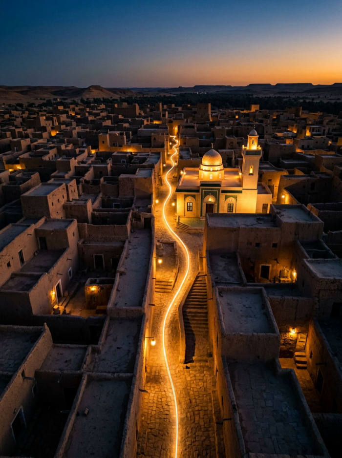

Одно приложение для молитвы, путешествий и повседневной жизни.
Тысячи мест по всему миру, дополненные сообществом: фото, часы работы, как добраться, удобства и отзывы.
Расчёт по вашему местоположению и выбранному методу, уведомления точно в срок и выбор звука.
Точный компас и навигация в дополненной реальности до места молитвы.
Мусхаф с Tajwid, множество чтецов, переводы на ваш язык и чтение без интернета.
Повседневные дуа, счётчик зикра и дневник поклонения, чтобы достигать своих целей.
Этапы, дуа и практические советы, чтобы подготовиться к паломничеству и пройти его с душевным спокойствием.
Субтитры хутбы и чтения Корана в реальном времени, даже когда проповедник говорит на нескольких языках (Premium +).
Пляжи, водоёмы и бассейны, где разрешены закрытые купальные костюмы, — по отзывам и фото сообщества.
Учёт пропущенных постов для восполнения и пауза напоминаний о намазе. Эти данные хранятся только на вашем телефоне.
NoorSpot растёт благодаря тем, кто им пользуется. Каждое добавленное место, каждое фото и каждый отзыв помогают другому мусульманину вовремя совершить намаз — рядом с домом или в путешествии.

Городские бассейны часто не пускают в закрытых купальных костюмах. NoorSpot собирает пляжи, водоёмы и частные бассейны, где их принимают, с отзывами и фото, сделанными на месте и проверенными ИИ. Место получает статус «Certified» после 10 совпадающих отзывов.
Мы не продаём ваши данные. Вы можете в любой момент экспортировать их или удалить аккаунт прямо в приложении. Данные о цикле никогда не покидают ваш телефон.
Приложение доступно на французском, английском, арабском, русском, испанском, итальянском и турецком языках.